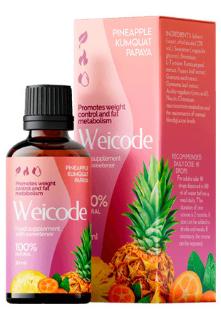
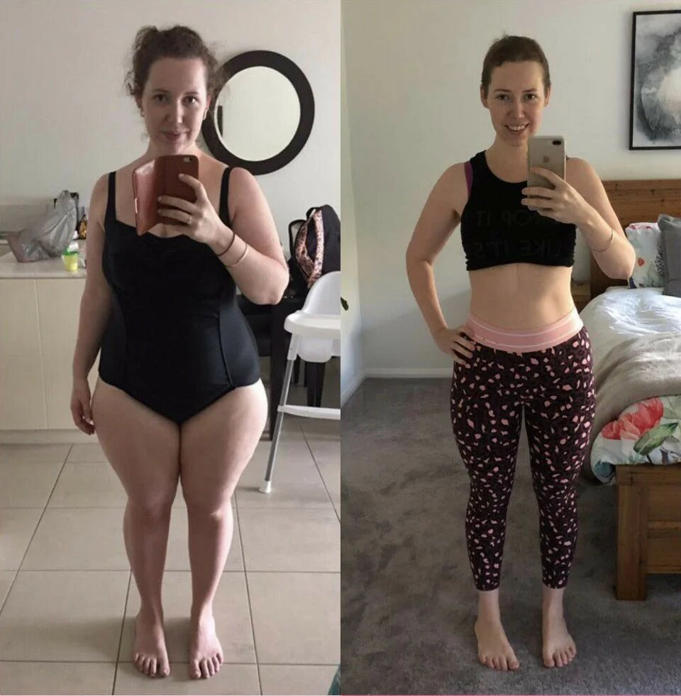

Der einfache Weg zum Abnehmen – ein Durchbruch in der modernen Diätetik?
Zuletzt aktualisiert: 12.05.2021Die offizielle Adipositas-Statistik in der Welt liegt bei 1,9 Milliarden Menschen, die übergewichtig sind. Und diese Zahl steigt ständig. Der Hauptgrund für den rasanten Anstieg ist, dass die Menschen nicht wissen, wie sie richtig abnehmen und ihr Gewicht im Zaum halten können. Um Übergewicht zu verlieren, halten sich viele Menschen an zwei Regeln: regelmäßiges, anstrengendes Training und Kalorienzählen. Einem solchen Rhythmus kann nicht jeder standhalten, und deshalb kommt es zu Abstürzen. Der Körper wird gestresst, was zu einer weiteren Gewichtszunahme führt.
Die Ernährungswissenschaftlerin Kate Robinson hat alle Abnehmklischees zerschlagen und einen einfachen, effektiven Weg zum Abnehmen aufgezeigt.
- Hallo! Können Sie mir sagen, warum in letzter Zeit so viele Menschen an Fettleibigkeit leiden?
Hallo. Der erste Faktor ist die Ernährung. Es ist wichtig, was Sie essen und in welcher Menge. Leider ist es in unserer Zeit schwierig, die richtige Ernährung einzuhalten. Die Regale in den Geschäften sind voll mit Fast Food, Süßigkeiten, Limonaden und anderen ungesunden Lebensmitteln, vor denen es schwer ist, zu widerstehen
Es gibt auch sekundäre Faktoren, die Adipositas beeinflussen: Vererbung, Lebensstil und die Umwelt. Aber im Moment ist es für uns wichtiger zu wissen, warum wir nicht abnehmen können, nicht warum wir zunehmen.
- Ja, in der Tat, warum ist es so schwierig, Übergewicht zu verlieren?
- In meinen 12 Jahren Praxis habe ich genug Beispiele für Adipositas bei Menschen gesehen, die noch nicht einmal 30 Jahre alt sind. Es kommt darauf an, wie der Stoffwechsel funktioniert. Der Stoffwechsel verlangsamt sich, das Fett wird viel schneller gespeichert und strenge Diäten provozieren nur seine aktive Anhäufung.
- Und hier bitte näher ausführen. Wollen Sie damit sagen, dass Diäten nicht beim Abnehmen helfen?
- Nicht wirklich. Eine gesunde und maßvolle Ernährung hat noch niemandem geschadet. Aber die strengen Diäten, die vor 5-10 Jahren so beliebt waren, bringen nichts. Ich erkläre Ihnen, wie es funktioniert.
Durch eine strenge Diät bekommt der Körper nicht genug der Stoffe, die er braucht. Das Gehirn nimmt dies als Bedrohung wahr und beginnt, Fettreserven für schlechte Zeiten anzulegen.
Wir wollen also das Übergewicht loswerden und häufen es im Gegenteil aktiv an. Aus diesem Grund ist es wichtig, eine richtige Ernährung aufzubauen. Wenn man reichlich, aber falsch isst, bekommt der Körper auch nicht die notwendigen Stoffe und lagert weiter Fett ein, anstatt es in Energie umzuwandeln.
- Ist es möglich, durch Training abzunehmen, ohne die Ernährung zu ändern?
- Körperliche Aktivität ist sehr wichtig. Aber Sport ist nur 20-30% des Gewichtsverlustes. Sie nehmen nicht so sehr ab, sondern stärken Ihr Muskelkorsett, wenn die Trainingseinheiten richtig gewählt werden. Die wichtigste Gewichtsabnahme besteht darin, Ihre Ernährung zu regulieren. Das ist der Grund, warum viele Menschen keinen Sport treiben, sondern aktiv mit einer Ernährungsumstellung abnehmen.
- Was dann? Gibt es einen anderen Weg, um Gewicht zu verlieren?
- Es gibt verschiedene Möglichkeiten: Operationen, kosmetische Injektionen, Anti-Cellulite-Massagen und Wickel. Aber alle von ihnen sind unwirksam, ohne eine spezielle Diät zu halten. Daher ist eine funktionierende Methode der Gewichtsabnahme nur eine, die sorgfältig Ernährung bietet. Es sollte alle Vitamine und Mineralien enthalten, die der Körper braucht, einschließlich derer, die den Stoffwechsel beschleunigen sollen. Nur dann wird das Gewicht anfangen zu verschwinden.
Eine solche Diät ist schwierig und teuer zu bauen. Deshalb empfehle ich, spezielle natürliche Nahrungsergänzungsmittel zur Gewichtsabnahme zu kaufen.
- Erzählen Sie uns etwas über eine beliebige Ergänzung.
- Das wirksamste Werkzeug ist meiner Meinung nach der -Komplex. Es enthält alle notwendigen Substanzen für den Körper, mit ihm können Sie nicht über die richtige Ernährung denken. Und sein Hauptvorteil ist die schnelle Wirkung, man kann den Effekt schon in der ersten Woche sehen!

Ich empfehle für Menschen mit unterschiedlichem Grad an Fettleibigkeit. Die Ergebnisse sind immer die gleichen – ein Verlust von 40 % oder mehr Fettmasse in einem Kurs bei minimalem Verlust an Muskelmasse. ist ein echter Durchbruch in der modernen Diätetik!
- Ich habe noch nie von diesen Ergänzungsmitteln gehört. Ehrlich gesagt, kann ich selbst nicht glauben, dass es so einfach ist, diese zusätzlichen Pfunde zu verlieren.
- Das ist wirklich etwas Außergewöhnliches. Viele Menschen sind immer noch der Meinung, dass man sich unglaublich anstrengen muss, um abzunehmen. Aber jetzt hat die Medizin große Fortschritte gemacht und der Prozess des Abnehmens ist viel einfacher als noch vor 5 Jahren. Auch meine Patienten zögern zunächst, wenn ich ihnen empfehle. Aber die Ergebnisse sprechen für sich.

- Es ist erstaunlich. Wie viel Gewicht kann man auf diese Weise in einem Monat verlieren?
- Es kommt auf den Body-Mass-Index, den Wasserhaushalt, den Anteil von Fett, Muskeln und Knochenmasse an. Im Durchschnitt wird eine Gewichtsreduktion von 5-10 Kilogramm während einer Kur beobachtet. Aber es gibt auch andere Ergebnisse. Ich werde Ihnen ein konkretes Beispiel geben. Einer meiner Patienten im Alter von 28 Jahren mit einer Größe von 165 Zentimetern wog 99 kg.
Ich habe keine Diät formuliert oder Fitnesskurse empfohlen. Ich verschrieb eine einmonatige Kur von und bat die Patientin, ein Tagebuch zu führen, in dem sie jede Woche ihre Ergebnisse festhielt:
1 WOCHE
Bemerkte Verbesserung der Schlafqualität und mehr Energie.
Maße:
- Brust: -3 cm
- Bauchraum: -4 cm
- Hüften: -3 cm
Gewicht: -3 kg
2 WOCHEN
Der Patient stellte fest, dass das Sättigungsgefühl schon bei der Hälfte der üblichen Essensportion eintritt. Der unkontrollierte Appetit ist verschwunden.
Maße:
- Brust: -6 cm
- Bauch: -8 Zentimeter
- Hüfte: -8 cm
Gewicht: -6 kg
3 WOCHEN
Die Patientin bemerkte, dass sie sich auch nach Nahrungsmitteln gut fühlte, die normalerweise Magenbeschwerden verursachen: Milchprodukte und Hülsenfrüchte. Das bedeutet, dass sie nun in der Lage ist, diese Nahrungsmittel zu verdauen, ohne dass sie die Darmwände verstopfen und eine Gärung hervorrufen
Maße:
- Brust: -7 cm.
- Bauch: -11 cm
- Hüfte: -10 cm
Gewicht: -12 kg
4 WOCHEN
Es wurde eine Vitalität über den ganzen Tag und eine erhöhte Leistungsfähigkeit festgestellt. Die Tests ergaben auch einen Rückgang des Blutzuckerspiegels. Am Ende des Experiments war die Fettmenge im Körper der Probanden um 9 % gesunken und bewegte sich im Rahmen der allgemeinen Norm von 27 %.
Maße:
- Brust: -8 cm
- Bauch: -14 cm
- Hüfte: -12 cm
Gewicht: -18 kg

Dieses Experiment hat bewiesen, dass das funktioniert. Seine Wirkstoffe verbessern signifikant die Verdauung, den Stoffwechsel und den Kohlenhydrat-Stoffwechsel. Der Körper beginnt mit diesem Mittel, nicht nur alle gegessenen Kalorien, sondern auch das abgelagerte Fett aktiv zu verbrennen und es in Energie umzuwandeln. Deshalb bemerken die Patienten während des Kurses einen großen Energieschub.
- Vielen Dank für das offene Gespräch. Ich denke, dass Sie jetzt vielen Menschen geholfen haben und es für sie nun viel einfacher sein wird, Übergewicht loszuwerden. Ich habe nur noch eine Frage: Wo kann ich dieses Mittel kaufen?
- Das Produkt hat bereits alle notwendigen Prüfschritte durchlaufen und die entsprechenden Qualitätszertifikate erhalten. Vielleicht erscheint noch in diesem Jahr in den Apotheken, aber bis jetzt kann man es nur auf der offiziellen Website des Herstellers kaufen. Ich bestelle ehrlich gesagt gerne direkt. Auf diese Weise bin ich vor Fälschungen geschützt und erhalte sehr oft Rabatte.


Und ich dachte, ich hätte nicht genug Willenskraft. Ich habe versucht, strenge Diäten zu machen, aber das Gewicht ging nicht runter. Danke, dass Sie mir alles genau erklärt haben, jetzt verstehe ich, was los ist.
Auch ich bekam von einer Ernährungsberaterin verschrieben, nahm es zusammen mit meinem Mann, er bekam -17kg, ich -12kg. Wir sind sehr zufrieden mit dem Ergebnis, auch wenn wir nicht ins Fitnessstudio gehen, sondern zu Hause trainieren.

Warum fressen manche Leute und sind dünn, und andere versuchen, alles einzuschränken, aber sie nehmen nicht ab?
es kommt auf den stoffwechsel an. wenn man einen schlechten hat, wird man sowieso fett. dieses mittel hilft einfach, den stoffwechsel zu beschleunigen, so dass der körper selbst den überschuss abbaut. sehr nützliches mittel.
Ich habe überhaupt keine Willenskraft. Ich habe ein paar Diäten ausprobiert, aber ich halte nur drei Tage durch
Um abzunehmen, müssen Sie stundenlang im Fitnessstudio arbeiten! Ich habe in sechs Monaten zehn Kilo abgenommen
Ich brauche dringend dieses Mittel! Diäten helfen überhaupt nicht, und ich kann nicht viel auf ihnen sitzen, keine Willenskraft. Endlich haben sie etwas für uns faule Leute erfunden:)
Diät ist vielleicht nicht die Hauptsache, aber man sollte definitiv keine Süßigkeiten essen, wenn man Fett loswerden will, habe es an mir selbst getestet.
Es ist tatsächlich sehr schwierig, angesammeltes Fett auf eigene Faust loszuwerden, man braucht definitiv Hilfe von außen. Ich habe vorher einige andere Ergänzungsmittel eingenommen, aber sie haben nicht die gleiche Wirkung wie mit . Es ist ein komplexes Medikament, was soll ich sagen. Ich bin im Alter von 43 Jahren Cellulite und zusätzliches Fett komplett losgeworden. Ich dachte nicht einmal, dass das möglich ist
Ich bin es so leid, fett zu sein. Ich kriege meinen Bauch nicht runter. Meine Arme sind so dick, dass ich nicht einmal ein T-Shirt tragen kann und ständig etwas anziehen muss, weil ich so komplex bin. Ich werde dieses Mittel auch ausprobieren.
Ich benutze auch, ich habe damit nach der Geburt 19 kg abgenommen.